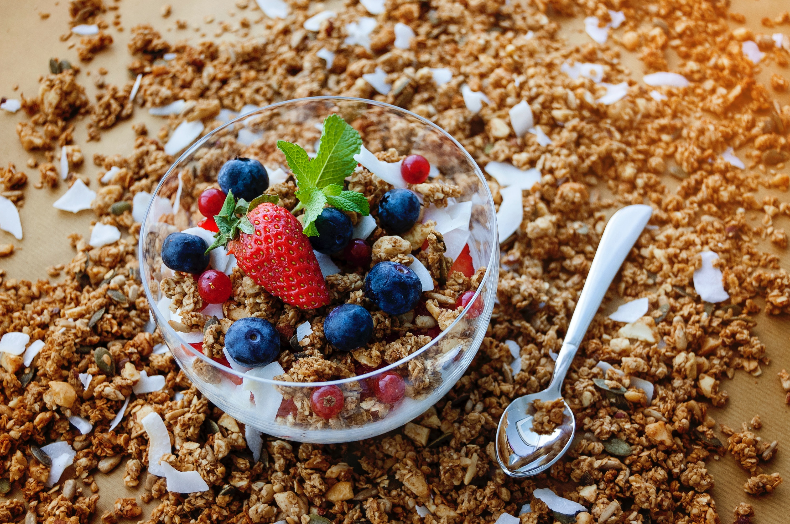

Desayuno de avena

Ingredientes
- - 1/2 vaso de avena
- - 1 vaso de leche
- - 1 pizca de sal
- - Azucar o miel a gusto
- - Frutas de estación, semillas, frutos secos y todo lo que quieras agregarle!
Preparacion
- 1. Calentar la leche en una cacerola. Una vez que está este caliente, incorporar la avena con la sal y empezar a revolver lentamente hasta que espese.
- 2. Servir en un plato ondo y endulzar a gusto con nuestra azúcar de mascabo o miel. Luego, yo le agrego algunas frutas de estación (banana, uvas, ciruela, durazno, etc), semillas (chía, por ejemplo) y algunos frutos secos (arándanos deshidratados, pasas de uva, nueces, almendras, etc) pero vos le podes agregar lo que a ti más te guste.
- 3. Y listo! Ahora a disfrutar
Desayuno huevo y palta
Preparacion
1. Untas el pan con queso blanco, palta pisada con limón y sal, le echas el huevo revuelto ya cocinado y listo!. y si queres podes agregarle tiritas de jamón... a eleccion.
Igredientes
- - 2 fetas pan negro tostado
- - 1 huevo revuelto
- - Queso blanco
- - 1 palta pequeña
- - Limón
- - 1 pizca Sal

Desayuno de arandanos

Ingredientes
- - Un puñado de arandanos
- - 1 o 2 frutillas
- - Cereles a eleccion
- - Leche o yogurt
Preparacion
1. Cortar la frutilla en rodajas y mezclar todos los ingredientes en un bowl y listo, a desayunar!